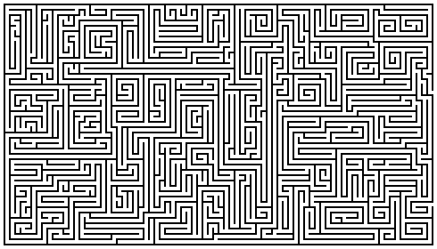

Find as many words as you can from the reading:
C
T D T G I V I N G O T D T A H T C
O
H E H T P E W S O N L S N O A H A
M
O T E S U O H W E E U T U O B A M
I
S C N G I B O V I M W N R S V D E
N
E E T R R M A F H A V E A L L R A
G
S P H I E E M A R R Y I N G O I T
M
T X E N H T O E U R E T I K R N I
L
A E M D T A W R O I H H E R D K N
B
Y N L I E K N O Y A T E W U N I G
R
E U N N G E E F D G P R N O W N S
O
D M I G O N R E A E G T W H U G Y
K
B A G O T N I R E R I N A O S L A
E
E T H I E F T E R L K T H I S A D
N
F T T A N O T H I N G P A R T W W
A
O H D O O L F T R E H T A F O A L
W
R E N A N G E L S K N O W S N K E
A
E W O D N A T S R E D N U L L E F
Y
W E R E N T E R E D W I L L Y S T
from www.geocities.com/lectionarypuzzles/ Free to distribute for free with this notice. Words are in a straight line in all directions.
What Advent practices will you and/or your congregation engage in this year?
________________________________________________
________________________________________________
________________________________________________
As you look toward the future, do you find yourself hopeful? or fearful?
________________________________________________
________________________________________________
________________________________________________
In what ways do these texts address your sense of hope? of fear?
________________________________________________
________________________________________________
________________________________________________

